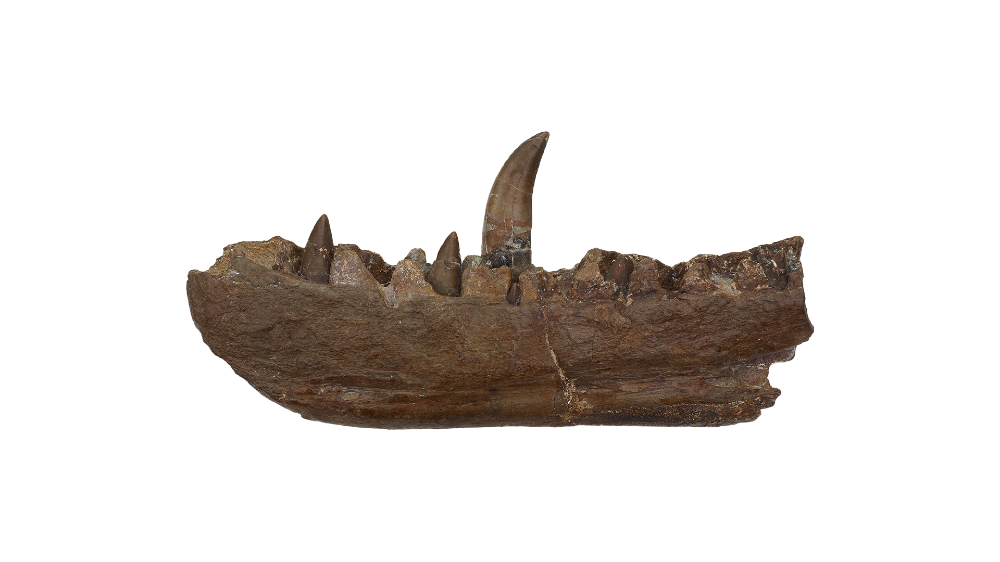
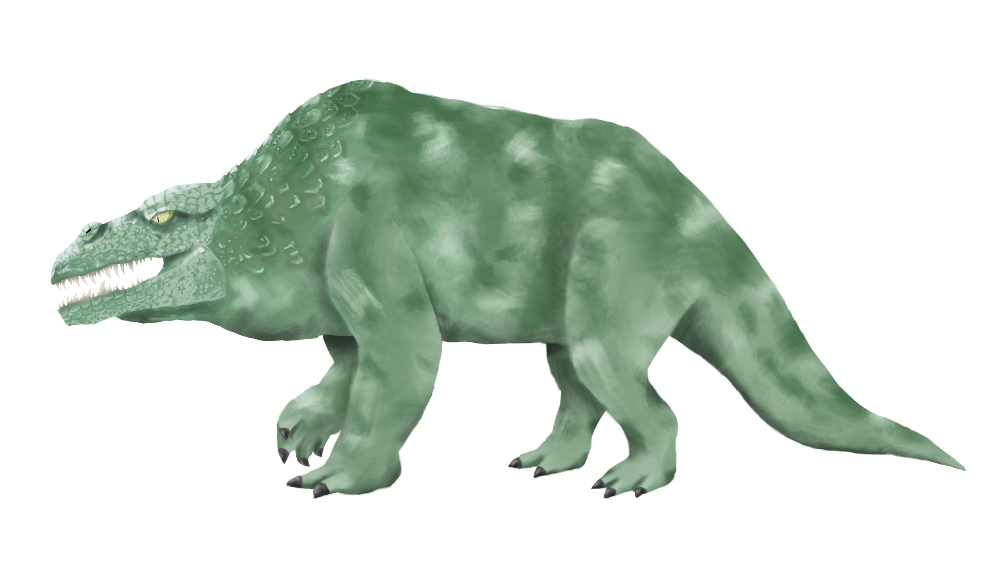
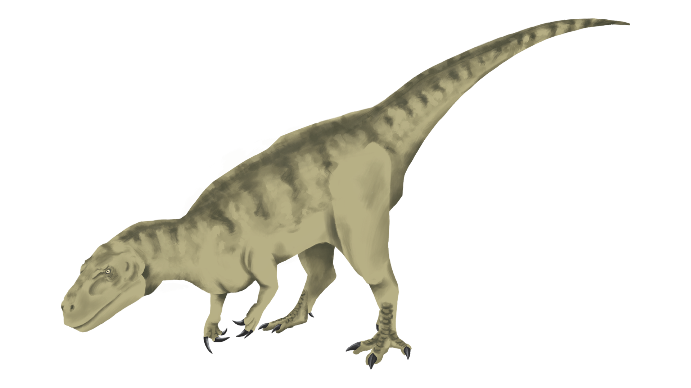
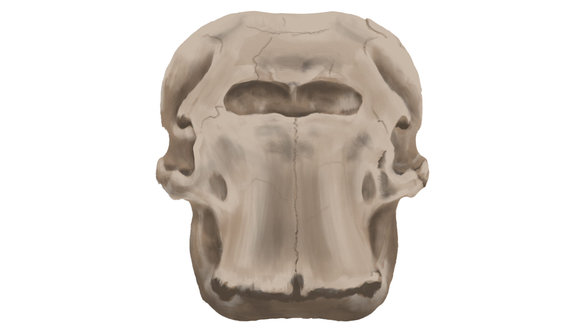
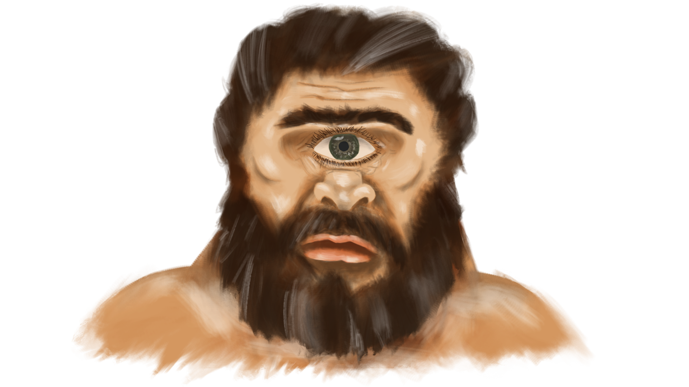
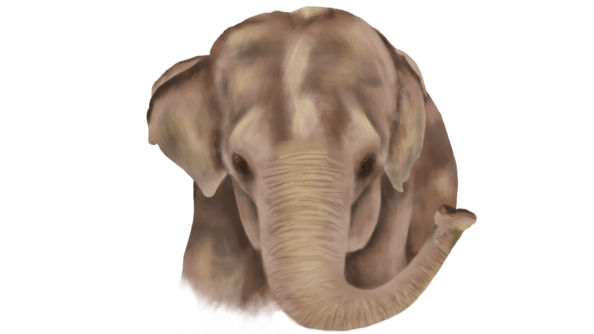

Megalosaurus bucklandii
Nel 1912, durante una serie di scavi nella Valle dei Fossili, vennero portati alla luce i primi resti frammentari di una struttura ossea sconosciuta.
Le prime ipotesi degli anatomisti dell'epoca descrivevano la creatura come un rettile gigante bipede, caratterizzato da crestazioni craniche prominenti e placche protettive lungo la spina dorsale.
Solamente decenni più tardi, l'analisi delle micro-scanalature ossee e dei sedimenti circostanti ha rivelato una realtà completamente diversa: gli apparati considerati armi d'attacco erano in realtà supporti vascolari per la termoregolazione di un organismo mite e vegetariano.



Palaeoloxodon falconeri
Quando i primi abitanti del Mediterraneo rinvennero nei cunicoli calcarei della Sicilia enormi crani con una profonda cavità centrale, immaginarono la dimora dei Ciclopi: giganti monocoli dalla forza prodigiosa.
In realtà, quel foro frontale non era un'orbita oculare, ma la cavità nasale dell'elefante nano siciliano (Palaeoloxodon falconeri), un pachiderma di appena novanta centimetri d'altezza evolutosi per nanismo insulare.
La fusione tra mito e fossile ha così trasformato un piccolo erbivoro pleistocenico nel più temuto dei mostri omerici, dimostrando ancora una volta come l'anatomia incompleta sia la fucina della mitologia.